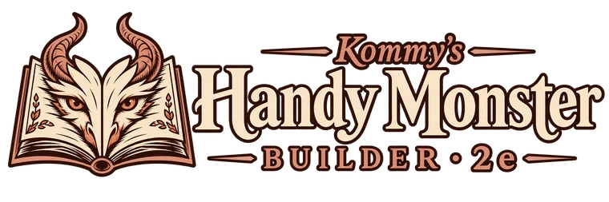

Kommy's Handy Monster Builder
Редактор статблоков монстров: шаблоны, пересчёт силы, перевод, вывод и печать. Всё работает в вашем браузере — монстры и файлы никуда не отправляются. A monster stat block editor: templates, rescaling, translation, export and printing. Everything runs in your browser — your monsters and files are never uploaded.
Совместимо с 5eCompatible with 5e
Монстры SRD уже внутри; свои бестиарии — файлами. Шаблоны, роли, пересчёт по CR, правила 2014 и 2024.
SRD monsters built in; load your own bestiaries as files. Templates, roles, CR rescaling, 2014 and 2024 rules.
Открыть →Open →
Совместимо с Pathfinder 2eCompatible with Pathfinder 2e
Ремастер. Монстры — из ваших данных в формате Foundry. Пересчёт по уровню, элитный и слабый, ступени, шаблоны.
Remaster. Monsters come from your own data in Foundry format. Level rescaling, elite and weak, tiers, templates.
Открыть →Open →